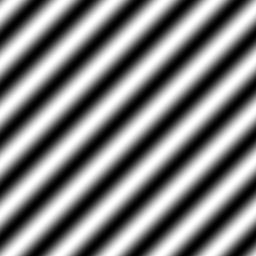

In nature, everything has a look that's at least somewhat randomized. This is difficult to achieve through mathematical formulas alone, but with randomly-generated noise, it becomes much easier.
To make random noise, we need a table of random values. Since our interest is making textures, a 2D array is used. The function generateNoise will be used to fill the array with random numbers, and the draw function handles drawing it on the canvas. The noise itself is generated using Math.random(), which returns a random number between 0 and 1.
var noiseWidth = 128;
var noiseHeight = 128;
var canvas = document.createElement("canvas");
canvas.width = noiseWidth;
canvas.height = noiseHeight;
var ctx = canvas.getContext("2d");
var noise = [];
function generateNoise() {
for (let y = 0; y < noiseHeight; y++) {
noise[y] = [];
for (let x = 0; x < noiseWidth; x++) {
noise[y][x] = Math.random();
}
}
}
function draw() {
generateNoise();
let imageData = ctx.createImageData(noiseWidth, noiseHeight);
for (let y = 0; y < noiseHeight; y++) {
for (let x = 0; x < noiseWidth; x++) {
let id = (y * canvas.width + x) * 4;
let c = noise[y][x] * 256;
imageData.data[id] = c;
imageData.data[id + 1] = c;
imageData.data[id + 2] = c;
imageData.data[id + 3] = 255;
}
}
ctx.putImageData(imageData, 0, 0);
}
draw();
document.body.appendChild(canvas);Here's the noise it generates:
This noise doesn't look particularly natural, however, especially if you zoom in. Zoom in by dividing the x and y used to call the noise array by 8, in the pixel loop of the draw function. You get something blocky:
let id = (y * canvas.width + x) * 4;
let c = noise[Math.floor(y / 8)][Math.floor(x / 8)]; //Make sure they're integers
imageData.data[id] = c;
imageData.data[id + 1] = c;
imageData.data[id + 2] = c;
imageData.data[id + 3] = 255;When zooming in, we want something smoother. For that, bilinear interpolation can be used. Currently, the noise is an array with integer indices pointing to its contents. By using bilinear interpolation on the fractional part, you can make it smoother. To do that, a new function, smoothNoise, is introduced:
function smoothNoise(x, y) {
//Get fractional part of x and y
let fractX = x - Math.floor(x);
let fractY = y - Math.floor(y);
//Wrap around
let x1 = (Math.floor(x) + noiseWidth) % noiseWidth;
let y1 = (Math.floor(y) + noiseHeight) % noiseHeight;
//Neighbouring values
let x2 = (x1 + noiseWidth - 1) % noiseWidth;
let y2 = (y1 + noiseHeight - 1) % noiseHeight;
//Bilinear interpolation
let value = 0.0;
value += fractX * fractY * noise[y1][x1];
value += (1 - fractX) * fractY * noise[y1][x2];
value += fractX * (1 - fractY) * noise[y2][x1];
value += (1 - fractX) * (1 - fractY) * noise[y2][x2];
return value;
}The returned value is the weighted average of four neighbouring pixels in the array. In the drawing function, you can use this instead of directly calling the noise array.
let id = (y * canvas.width + x) * 4;
let c = smoothNoise(x / 8, y / 8)
imageData.data[id] = c;
imageData.data[id + 1] = c;
imageData.data[id + 2] = c;
imageData.data[id + 3] = 255;This is the result zoomed in 8 times with bilinear interpolation. If you don't zoom in, you probably won't see the interpolation:
This will be very useful for random noise. The smoothing method could probably be better, but it'll work for now.
Turbulence is what creates natural-looking features from smoothed noise. With the right application of it, you can give otherwise flat-looking patterns natural-looking textures.
In 2D, this is done by adding multiple sizes of smooth noise together:
The zoom factor started at 16 here, and is divided through 2 each time, until the zoom factor is 1.
When you add these 5 images together, then divide them by 5 to get the average, you get a turbulence texture:

Here's a function that will do all of that automatically. The "size" parameter is the initial zoom factor, which was 16 in the example above. The returned value is normalized so it will be a value between 0 and 255.
function turbulence(x, y, size) {
let value = 0.0;
let initialSize = size;
while (size >= 2) {
value += smoothNoise(x / size, y / size) * size;
size /= 2.0;
}
return (128.0 * value / initialSize);
}The size is set to 64 here, and the result looks like this:
If you set the initial size to something bigger, like 256, the result becomes much bigger and smoother:
And here's a very small initial size of only 8:
The textures seen here may have some obvious lines because of the bilinear filter smooth function. The Clouds filters seen in programs like Photoshop will generate a similar pattern, but with much nicer smoothing. Nicer smoothing filters are beyond the scope of this tutorial, though.
Of course, if you use no smoothing function at all, it looks like this:
To make clouds, you can use the turbulence texture from earlier, but with a blue-and-white color palette instead of black and white. For that, an HSL-to-RGB conversion function can be used, with the hue set to a shade of blue (240°) and lightness ranging from 75 to 100 percent to make it bright enough. Here's a new drawing function that will achieve this:
function draw() {
generateNoise();
let imageData = ctx.createImageData(canvas.width, canvas.height);
for (y = 0; y < noiseHeight; y++) {
for (x = 0; x < noiseWidth; x++) {
let id = (y * canvas.width + x) * 4;
let l = 192 + turbulence(x, y, 64) / 4;
let c = hslToRgb(240 / 360, 1, l / 256);
imageData.data[id] = c[0];
imageData.data[id + 1] = c[1];
imageData.data[id + 2] = c[2];
imageData.data[id + 3] = 255;
}
}
ctx.putImageData(imageData, 0, 0);
}The conversion function used in this example was taken from this script. Feel free to use it if you want to.
It's possible to use random noise to create a texture that looks like marble. To do this, a sine pattern is taken as a base. A sine pattern looks like this:
The sine pattern is generated by giving the pixel at position (x, y) the color value Math.sin(x + y) * 256. You can change the angle and period, or amount of lines, by multiplying x and y by certain factors. The sine pattern has dark and bright line, and by applying turbulence to these lines by adding a turbulence term in the sine, you get something that looks like the veins of marble:
function draw() {
generateNoise();
let imageData = ctx.createImageData(canvas.width, canvas.height);
//xPeriod and yPeriod together define the angles of the lines
//If xPeriod and yPeriod are both 0, it becomes a normal clouds or turbulence pattern
let xPeriod = 5.0; //Defines repetition of lines in x direction
let yPeriod = 10.0; //Defines repetition of lines in y direction
//If turbPower is 0, it becomes a normal sine pattern
let turbPower = 5.0; //Makes twists
let turbSize = 32.0; //Initial size of turbulence
for (let y = 0; y < canvas.height; y++) {
for (let x = 0; x < canvas.width; x++) {
let id = (y * canvas.width + x) * 4;
let xyValue = x * xPeriod / noiseWidth + y * yPeriod / noiseHeight + turbPower * turbulence(x, y, turbSize) / 256.0;
let sineValue = 256 * Math.abs(Math.sin(xyValue * Math.PI));
imageData.data[id] = sineValue;
imageData.data[id + 1] = sineValue;
imageData.data[id + 2] = sineValue;
imageData.data[id + 3] = 255;
}
}
ctx.putImageData(imageData, 0, 0)
}The value "xyValue" is the sum of x multiplied by a factor, y multiplied by a factor, and the turbulence multiplied by a factor. xPeriod, yPeriod, and turbPower are parameters you can change to get different textures. The division through 256 is done to bring it to a value between 0 and 1, since the turbulence function was designed to return values between 0 and 255. The values above give the following result:

Decreasing turbPower will give it less twists. For example, if you set it to 1, you get:
You can see the sine pattern much better now. The dark and bright lines only twist a small bit, which still gives a sort of natural look.
Changing the initial size of the turbulence function makes the twists bigger and much more subtle (similar to making turbPower smaller), while a smaller initial size gives much smaller but more aggressive twists. In the following images, turbPower was set to 5 again, and turbSize was set to 128 and 16, respectively:
Changing the x or y periods changes the amount of black lines in the image. For example, in this one the lines are made wider and with an angle of 0° by setting xPeriod to 0 and yPeriod to 1 so that there will be only one horizontal black line. turbSize is set to 32, and turbPower to only 1 so you can see the line better:
Here are the same parameters, but with turbPower set to 5. There's still only one line, but the bigger turbulence helps to obscure that.
You can also change the color of the marble by using different values for red, green, and blue. For example, this will give it a greenish tint.
let xyValue = x * xPeriod / noiseWidth + y * yPeriod / noiseHeight + turbPower * turbulence(x, y, turbSize) / 256.0;
let sineValue = 184 * Math.abs(Math.sin(xyValue * Math.PI))
let id = (y * imageData.width + x) * 4;
imageData.data[id] = 21 + sineValue;
imageData.data[id+1] = 71 + sineValue;
imageData.data[id+2] = 52 + sineValue;
imageData.data[id+3] = 255;It's possible to apply the code used to generate Marble patterns for other things. For example, with the right color, you can create sand-like patterns.
This uses the same HSL-to-RGB function as the Clouds example from earlier.
function draw() {
generateNoise();
let imageData = ctx.createImageData(canvas.width, canvas.height);
//xPeriod and yPeriod together define the angles of the lines
//If xPeriod and yPeriod are both 0, it becomes a normal clouds or turbulence pattern
let xPeriod = 5.0; //Defines repetition of lines in x direction
let yPeriod = 10.0; //Defines repetition of lines in y direction
//If turbPower is 0, it becomes a normal sine pattern
let turbPower = 5.0; //Makes twists
let turbSize = 128.0; //Initial size of turbulence
for (let y = 0; y < canvas.height; y++) {
for (let x = 0; x < canvas.width; x++) {
let id = (y * canvas.width + x) * 4;
let xyValue = x * xPeriod / noiseWidth + y * yPeriod / noiseHeight + turbPower * turbulence(x, y, turbSize) / 256.0;
let sineValue = Math.abs(Math.sin(xyValue * Math.PI));
let c = hslToRgb(21 / 360, 41 / 100, (95 + sineValue) / 100);
imageData.data[id] = c[0];
imageData.data[id + 1] = c[1];
imageData.data[id + 2] = c[2];
imageData.data[id + 3] = 255;
}
}
ctx.putImageData(imageData, 0, 0);
}It's kind of difficult to see the individual bends and twists, but I assure you, they are there.
A texture resembling wood, or the rings of a tree stump, can be created by adding turbulence to the following mathematical function:

To get the pattern shown above, take the sine of the distance of x and y to the center, so the color of the pixel at the position (x, y) is 256 * Math.sin(Math.sqrt(x * x + y * y)). Add a turbulence term into the sine, and you get natural-looking wood.
The values for red, green, and blue are calculated in a way that ensures that the wood will look brown.
function draw() {
generateNoise();
let imageData = ctx.createImageData(canvas.width, canvas.height);
let xyPeriod = 12; //Number of rings
let turbPower = 0.1; //Creates twists
let turbSize = 32; //Initial zoom factor of turbulence
for (y = 0; y < canvas.height; y++) {
for (x = 0; x < canvas.width; x++) {
let id = (y * canvas.width + x) * 4;
let xValue = (x - noiseWidth / 2) / noiseWidth;
let yValue = (y - noiseHeight / 2) / noiseHeight;
let distValue = Math.sqrt(xValue * xValue + yValue * yValue) + turbPower * turbulence(x, y, turbSize) / 256;
let sineValue = 128 * Math.abs(Math.sin(2 * xyPeriod * distValue * Math.PI));
imageData.data[id] = 80 + sineValue;
imageData.data[id + 1] = 30 + sineValue;
imageData.data[id + 2] = 30;
imageData.data[id + 3] = 255;
}
}
}The rings are supposed to be visible here, so unlike the marble textures, turbPower should be a smaller number.

Here's the same result with more rings (xyPeriod is set to 25):
In this image, the wood has 12 rings again, but there's more turbulence (turbPower is set to 0.2):
If you set turbPower too high, the rings will no longer be visible, and you'll get something similar to the marble textures from earlier. For example, here's what happens when you set it to 0.5:
2D random noise has many other uses beyond generating textures, such as terrain heightmaps, but they are beyond the scope of this tutorial.
Random noise can be extended to any number of dimensions. Extending to three dimensions requires the addition of a z-component — besides a width and a height, the noise array now needs a depth.
var noiseWidth = 192;
var noiseHeight = 192;
var noiseDepth = 64;
var canvas = document.createElement("canvas");
canvas.width = noiseWidth;
canvas.height = noiseHeight;
var ctx = canvas.getContext("2d");
var noise = [];The noise generator function now has three dimensions to fill up, so it gets an extra loop:
function generateNoise() {
for (z = 0; z < noiseDepth; z++) {
noise[z] = [];
for (y = 0; y < noiseHeight; y++) {
noise[z][y] = [];
for (x = 0; x < noiseWidth; x++) {
noise[z][y][x] = Math.random();
}
}
}
}The smoothing function now has to interpolate in the x, y, and z directions, so there are 8 terms instead of 4.
function smoothNoise(x, y, z) {
//Get fractional part of x, y, and z
let fractX = x - Math.floor(x);
let fractY = y - Math.floor(y);
let fractZ = z - Math.floor(z);
//Wrap around
let x1 = (Math.floor(x) + noiseWidth) % noiseWidth;
let y1 = (Math.floor(y) + noiseHeight) % noiseHeight;
let z1 = (Math.floor(z) + noiseDepth) % noiseDepth;
//Neighbour values
let x2 = (x1 + noiseWidth - 1) % noiseWidth;
let y2 = (y1 + noiseHeight - 1) % noiseHeight;
let z2 = (z1 + noiseDepth - 1) % noiseDepth;
//Smooth the noise with bilinear interpolation
let value = 0.0;
value += fractX * fractY * fractZ * noise[z1][y1][x1];
value += fractX * (1 - fractY) * fractZ * noise[z1][y2][x1];
value += (1 - fractX) * fractY * fractZ * noise[z1][y1][x2];
value += (1 - fractX) * (1 - fractY) * fractZ * noise[z1][y2][x2];
value += fractX * fractY * (1 - fractZ) * noise[z2][y1][x1];
value += fractX * (1 - fractY) * (1 - fractZ) * noise[z2][y2][x1];
value += (1 - fractX) * fractY * (1 - fractZ) * noise[z2][y1][x2];
value += (1 - fractX) * (1 - fractY) * (1 - fractZ) * noise[z2][y2][x2];
return value;
}Luckily, the turbulence function is much easier to extend; all you have to do is add a z parameter in a few places.
function turbulence(x, y, z, size) {
let value = 0.0;
let initialSize = size;
while (size >= 2.0) {
value += smoothNoise(x / size, y / size, z / size) * size;
size /= 2.0;
}
return (128.0 * value / initialSize);
}The draw function and surrounding code is dedicated to generating animated clouds. It's as if they're forming and changing in real time.
var imageData = ctx.createImageData(canvas.width, canvas.height) //We don't want to create a new ImageData every frame. That's just wasteful.
function draw(time) {
let animTime = time / 40.0;
for (y = 0; y < canvas.height; y++) {
for (x = 0; x < canvas.width; x++) {
let id = (y * canvas.width + x) * 4;
let l = 192 + Math.floor(turbulence(x, y, animTime, 32) % 256) / 4;
let c = hslToRgb(169 / 256, 1, l / 256)
imageData.data[id] = c[0];
imageData.data[id + 1] = c[1];
imageData.data[id + 2] = c[2];
imageData.data[id + 3] = 255;
}
}
ctx.putImageData(imageData, 0, 0);
window.requestAnimationFrame(draw);
}
generateNoise();
window.requestAnimationFrame(draw);
document.body.appendChild(canvas);When you're finished, it should look somewhat similar to this:
3D noise-based textures have a number of uses, including, but certainly not limited to animated textures, volumetric fog, and 3D textures for things like planets or mountains.